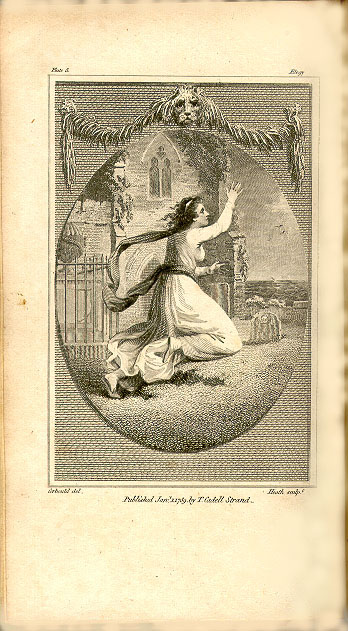

contents | previous | next Lord of the hopeless heart and hollow eye, In whose fierce train each form is seen That drives sick Reason to insanity! "Grim visag'd, comfortless Despair:" Approach; in me a willing victim find, Who seeks thine iron sway and calls thee kind! Ah! hide for ever from my sight The faithless flatterer Hope whose pencil, gay, Portrays some vision of delight, Then bids the fairy tablet fade away; While in dire contrast, to mine eyes, Thy phantoms, yet more hideous, rise, 61 And Memory draws, from Pleasure's wither'd flower,Corrosives for the heart of fatal power! I bid the traitor Love, adieu! Who to this fond, believing bosom came, A guest insidious and untrue, With Pity's soothing voice in friendship's name; The wounds he gave, nor time shall cure, Nor Reason teach me to endure. And to that breast mild Patience pleads in vain, Which feels the curse of meriting it's pain. Yet not to me, tremendous power! Thy worth of spirit-wounding pangs impart, With which, in dark conviction's hour, Thou strik'st the guilty unrepentant heart! But of illusion long the sport, That dreary, tranquil gloom I court, Where my past errors I may still deplore, And dream of long-lost happiness no more! 62 To thee I give his tortur'd breast,Where Hope arises but to softer pain; Ah! lull it's agonies to rest! Ah! let me never be deceiv'd again! But callous, in thy deep repose Behold, in long array, the woes Of the dread future, calm and undismay'd, Till I may claim the Hope — that shall not fade! [plate 5]
 |